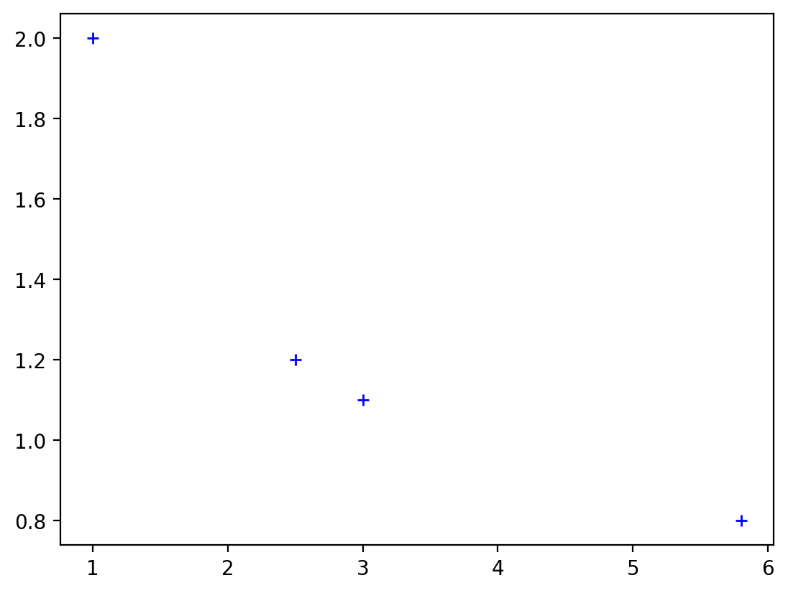
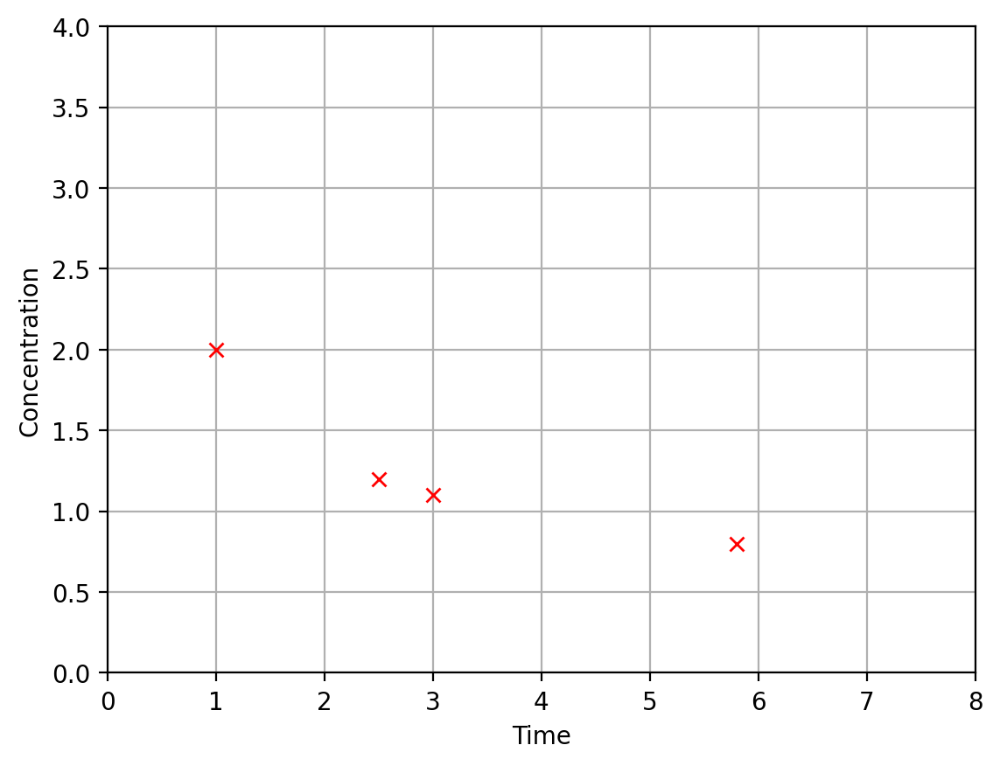

import numpy as np
A = np.array([[5, -1, 1, 0],[4, 3, 12, -6]])
print(A)[[ 5 -1 1 0]
[ 4 3 12 -6]]Numpy는 선형 대수학 및 기타 과학 컴퓨팅 영역에 필요한 계산을 수행하는 데 필수적인 Python 패키지입니다. Matplotlib은 다양한 그래프를 생성하기 위한 Python 패키지입니다. 선형 대수학에서 접하게 되는 많은 계산에는 NumPy가 사용되지만, 개념을 시각적으로 유용하게 표현하기 위해서만 Matplotlib을 활용하는 것을 권장합니다.
선형 대수에서 하는 거의 모든 계산은 숫자 배열을 다루는 작업이 포함됩니다. 배열은 행과 열로 배열되어 직사각형을 이루는 숫자의 집합으로 생각할 수 있는데, 아래 예는 행 2개와 열 4개로 이루어진 배열입니다.
\[ \begin{matrix} \left[ \begin{array}{rrrr} 5 & -1 & 1 & 0 \\ 4 & 3 & 12 & -6 \end{array}\right] \end{matrix} \]
파이썬의 List 객체를 사용하여 배열을 표현할 수도 있지만, NumPy 배열 객체를 사용하겠습니다. NumPy는 배열을 표현하는 강력한 방법을 가지고 있으며, 배열을 효율적으로 처리하기 위한 많은 내장 도구가 있습니다. 수학 모듈과 마찬가지로, NumPy를 사용하기 전에 해당 패키진를 가져와야 합니다. 이번에는 모듈을 가져오되 입력하기 더 편리한 별칭이라고 하는 다른 이름을 지정하는 \(\texttt{import numpy as np}\) 코드를 사용하겠습니다.
위의 배열을 만드는 가장 쉬운 방법은 \(\texttt{array}\) 함수를 사용하여 특정 형식의 모든 배열 항목 목록을 제공하는 것입니다. 행 항목은 쉼표로 구분하고 대괄호 []로 묶은 다음, 나열된 모든 행을 쉼표로 구분하고 또 다른 대괄호로 묶습니다.
import numpy as np
A = np.array([[5, -1, 1, 0],[4, 3, 12, -6]])
print(A)[[ 5 -1 1 0]
[ 4 3 12 -6]]원하는 배열을 만드는 또 다른 방법은 먼저 하나의 긴 행으로 된 배열을 만든 다음 \(\texttt{reshape}\) 함수를 사용하는 것입니다. 대괄호를 추가로 입력하는 것보다 더 편리할 수 있습니다.
B = np.array([5, -1, 1, 0, 4, 3, 12, -6])
print("This is B before reshaping.")
print(B)
C = B.reshape((2,4))
print("This is C, which is the entries of B formed into a new shape.")
print(C)This is B before reshaping.
[ 5 -1 1 0 4 3 12 -6]
This is C, which is the entries of B formed into a new shape.
[[ 5 -1 1 0]
[ 4 3 12 -6]]우리는 종종 원본의 복사본을 유지하면서 배열을 수정하고 싶을 때가 있습니다. 이 경우 \(\texttt{copy}\) 함수를 사용하여 기존 배열을 복제할 수 있습니다.
D = np.copy(A)
print(D)[[ 5 -1 1 0]
[ 4 3 12 -6]]배열의 개별 항목에 액세스하려면 한 쌍의 인덱스를 사용하여 액세스하려는 항목의 행과 열을 참조해야 합니다. 거의 모든 다른 컴퓨팅 언어와 마찬가지로 Python에서도 인덱스는 0부터 시작합니다! 즉, 첫 번째 행은 인덱스가 0이고 두 번째 행은 인덱스가 1이라는 뜻입니다. 열도 마찬가지입니다. 0에서 카운트를 시작하는 것은 어렵지 않지만, 프로그래밍을 처음 접하는 사람이라면 사고의 전환이 필요합니다.
print(A[0,2])1개별 배열 값에 새 번호를 할당하여 수정할 수 있습니다.
A[0,2] = 8
print(A)[[ 5 -1 8 0]
[ 4 3 12 -6]]때로는 대부분 0이 포함된 배열을 만드는 것이 유용할 때가 있습니다. 이 경우 모든 0이 포함된 배열을 만든 다음 0이 아닌 항목 몇 개를 수정할 수 있습니다.
## Create a 4x4 array that is all zeros.
D = np.zeros((4,4))
## Set entries along the main diagonal to 2.
for i in range(4):
D[i,i] = 2
print(D)[[2. 0. 0. 0.]
[0. 2. 0. 0.]
[0. 0. 2. 0.]
[0. 0. 0. 2.]]NumPy에 포함된 많은 함수는 어떤 식으로든 선형 대수와 관련이 있습니다. 해당 선형대수 주제를 진행하면서 이러한 함수를 더 많이 시연해 보겠습니다.
코드를 테스트하는 한 가지 방법은 많은 무작위 입력을 제공한 다음 각 인스턴스에서 올바른 결과가 생성되는지 확인하는 것입니다. 무작위 입력을 생성하기 위해 NumPy에 포함된 \(\texttt{random}\) 모듈의 함수를 사용할 것입니다. 예를 들어, 인수가 없는 \(\texttt{rand}\) 함수를 사용하여 0과 1 사이의 난수를 생성할 수 있습니다.
r = np.random.rand()
print(r)0.6983335663800959texttt{rand}$ 함수를 실행할 때마다 새로운 난수를 산출합니다. texttt{rand}$는 \(\texttt{random}\) 모듈에 포함된 함수이며, 이 모듈은 다시 NumPy에 포함되어 있다는 점에 유의하세요. 따라서 접근하려면 점 표기법을 두 번 사용해야 합니다.
또한 배열의 행과 열 수를 지정하는 두 개의 인수를 \(\texttt{rand}\)에 전달하여 임의의 숫자 배열을 생성할 수도 있습니다.
X = np.random.rand(3,2)
print(X)[[0.19443351 0.05665268]
[0.37579411 0.92505324]
[0.66751134 0.75502419]]임의의 정수를 생성하려면 \(\texttt{randint}\) 함수를 사용할 수 있습니다. 이 함수에는 생성되는 숫자의 상한을 지정하는 인수가 하나 이상 필요합니다. 아래 코드는 0에서 19 사이의 정수 중에서 난수를 생성합니다.
print(np.random.randint(20))16무작위 배열을 생성하려면 \(\texttt{size}\)라는 키워드 인수를 사용하여 행과 열의 개수를 지정해야 합니다. 키워드 인수*를 사용하려면 다음 예시와 같이 약간 다른 구문이 필요합니다.
Y = np.random.randint(10,size=(3,6))
print(Y)[[9 1 7 8 2 5]
[4 6 0 9 7 0]
[2 3 3 6 7 7]]파이썬 함수에서 키워드 인자를 사용하는 것은 매우 일반적입니다. 이 기능의 장점은 인수를 미리 지정된 순서대로 제공할 필요가 없다는 것입니다.
print(np.random.randint(size=(2,3),high=10,low=1))[[1 5 5]
[4 3 8]]또한 \(\texttt{random}\) 모듈에는 지정된 컬렉션에서 무작위로 선택된 값을 생성할 수 있는 \(\texttt{choice}\)라는 함수가 있습니다. 이 함수는 숫자 목록을 인수로 받아 해당 목록에서 무작위로 선택된 값을 반환합니다.
x = np.random.choice([0,3,7,42])
print(x)42또한 \(\texttt{choice}\) 함수를 사용하여 지정된 컬렉션의 값으로 구성된 숫자 배열을 생성할 수도 있습니다. 이 경우 다시 \(\texttt{size}\) 키워드 인수를 사용하면 됩니다.
X = np.random.choice([0,3,7,42], size = (2,3))
print(X)[[ 7 7 42]
[ 7 42 0]]Matplotlib은 다양한 플로팅 기능과 생성된 그림을 정밀하게 사용자 정의할 수 있는 다양한 옵션을 제공합니다. 여기서는 Jupyter 선형 대수학 가이드에 나오는 특정 유형의 그림을 만드는 방법에 대한 설명만 제공하며, 대부분은 동일한 필수 패턴을 따릅니다. 필요한 코드에 대한 몇 가지 세부 사항을 제공하지만 데이터 구조를 엄격하게 설명하거나 라이브러리 내에서 사용할 수 있는 다양한 옵션에 대해 논의하지는 않습니다.
첫 번째 그림에서는 \((x,y)\) 좌표가 있는 네 점의 간단한 플롯을 만들겠습니다. 좌표 목록은 NumPy 배열에 저장됩니다.
x = np.array([1, 2.5, 3, 5.8])
y = np.array([2, 1.2, 1.1, 0.8])다음 코드 셀에는 플롯을 생성하는 데 필요한 최소한의 지침이 포함되어 있습니다. 셀의 주석은 각 줄의 목적을 나타냅니다.
import matplotlib.pyplot as plt
%config InlineBackend.figure_format = 'retina'
fig, ax = plt.subplots()
ax.plot(x,y);\(texttt{subplots}\) 메서드는 그림과 축이라는 두 개의 Matplotlib 객체를 생성합니다. 그림은 Matplotlib의 기본 객체입니다. 축 객체는 그림 안에 포함되어 있으며, 우리가 가장 많이 상호작용할 객체입니다. 축 객체의 \(\texttt{plot}\) 메서드는 실제로 좌표 집합을 축에 플롯하는 함수입니다. 결과를 보기 위해 \(\texttt{print}\) 명령이 필요하지 않다는 점에 유의하세요.
이 기본적인 \(\texttt{plot}\) 메서드 사용으로 생성된 플롯은 데이터 포인트 좌표를 선으로 연결했습니다. 이것이 이 메서드의 기본 기능입니다. Matplotlib 메서드(그리고 실제로 다른 많은 파이썬 라이브러리의 메서드)는 최소한의 인수를 제공하여 생성되는 기본 기능을 가지고 있지만, 이 기본 기능을 변경하는 추가 인수를 제공할 수 있는 것이 일반적입니다. 이 예제에서는 \(\texttt{plot}\) 메서드에 선택적 인수 \(\texttt{'b+'}\)를 제공하여 데이터 좌표를 연결하는 선 대신 파란색 + 기호가 있는 플롯을 생성할 수 있습니다.
fig, ax = plt.subplots()
ax.plot(x,y,'b+');
데이터 요소를 플로팅하는 데 관심이 있는 경우 또 다른 대안은 동일한 구문을 사용할 수 있는 \(\texttt{scatter}\) 메서드입니다.
fig, ax = plt.subplots()
ax.scatter(x,y);다음은 이러한 플롯에서 사용할 수 있는 여러 옵션 중 일부를 구성하는 방법을 보여드리겠습니다. 플롯은 실제로 축 객체에서 구성되므로 플롯의 요소에 영향을 주는 모든 옵션은 해당 객체의 메서드라는 점을 기억하세요.
fig, ax = plt.subplots()
ax.plot(x,y,'rx');
ax.set_xlim(0,8);
ax.set_ylim(0,4);
ax.grid(True);
ax.set_xlabel('Time');
ax.set_ylabel('Concentration');
다음 예제에서는 \([-2,4]\) 간격의 \(x\)에 대한 곡선 \(y=0.5x^2\)를 플롯하는 것이 목표입니다. 동일한 방법을 사용하려면 주어진 간격에서 \(x\)에 대해 곡선 위에 놓이는 점 집합을 생성해야 합니다. 지정하는 점들은 직선으로 연결되므로 곡선이 들쭉날쭉한 모양이 되지 않도록 충분한 점을 생성해야 합니다. NumPy 메서드 \(\texttt{linspace}\)는 점을 쉽게 생성할 수 있는 방법을 제공합니다. 이 메서드는 지정된 간격으로 숫자가 균등하게 배치된 NumPy 배열 객체를 생성합니다.
x = np.linspace(-2,4,9)
print(x)
y = 0.5*x**2
print(y)[-2. -1.25 -0.5 0.25 1. 1.75 2.5 3.25 4. ]
[2. 0.78125 0.125 0.03125 0.5 1.53125 3.125 5.28125 8. ]이 플롯에서는 매끄럽게 보이는 곡선을 생성하기 위해 더 많은 수의 점을 사용합니다. 또한 \(x\) 및 \(y\) 축을 따라 틱을 구성하는 등 몇 가지 다른 옵션을 사용하여 이 플롯의 모양을 조정합니다. 눈금은 축을 따라 격자선과 숫자 레이블을 정의하는 숫자 목록입니다. texttt{plot}$ 메서드는 ticks*의 기본값을 제공하며, 새 값의 배열을 제공하여 변경할 수 있습니다.
x = np.linspace(-2,4,100)
y = 0.5*x**2
fig, ax = plt.subplots()
ax.plot(x,y);
ax.set_xlim(-2,4);
ax.set_ylim(0,8);
ax.grid(True,ls='dotted');
ax.set_aspect('equal');
ax.set_xticks(np.linspace(-2,4,4));
ax.set_yticks(np.linspace(0,8,5));
fig, ax = plt.subplots()
ax.plot(x,y,'g',ls='dashed');
ax.set_xlim(-3,5);
ax.set_ylim(-1,9);
ax.grid(True,ls='dotted');
ax.set_aspect('equal');
ax.set_xticks(np.linspace(-3,5,9));
ax.set_yticks(np.linspace(-1,9,11));
ax.axvline(color='k',linewidth = 1);
ax.axhline(color='k',linewidth = 1);